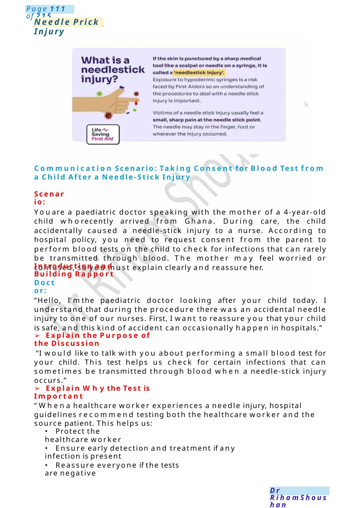
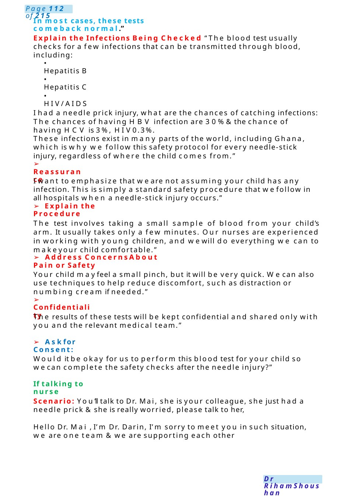
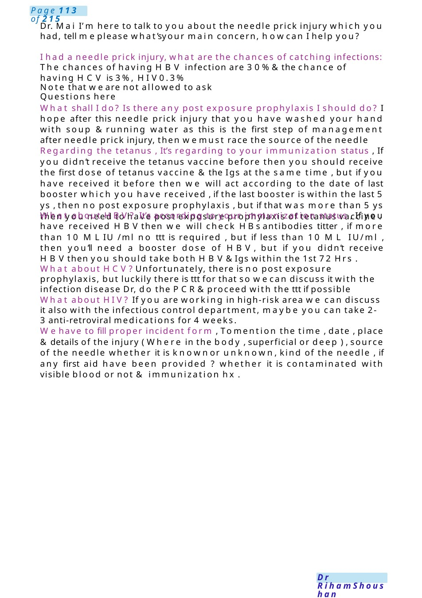
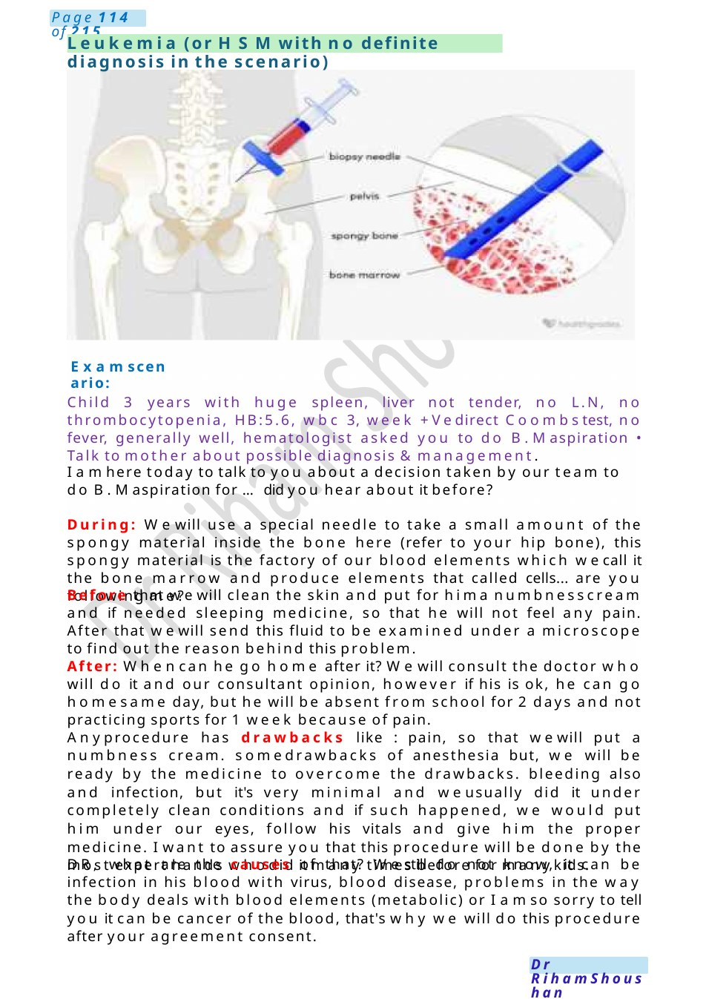

Needle Prick Injury
Communication Scenario: Taking Consent for Blood Test from a Child After a Needle-Stick Injury Youare a paediatric doctor speaking with the mother of a 4-year-old child whorecently arrived from Ghana. During care, the child accidentally caused a needle-stick injury to a nurse. According to hospital policy, you need to request consent from the parent to perform blood tests on the child to check for infections that can rarely be transmitted through blood. The mother may feel worried or confused, so you must explain clearly and reassure her.
Scenario Summary
Communication Scenario: Taking Consent for Blood Test from a Child After a Needle-Stick Injury Youare a paediatric doctor speaking with the mother of a 4-year-old child whorecently arrived from Ghana. During care, the child accidentally caused a needle-stick injury to a nurse. According to hospital policy, you need to request consent from the parent to perform blood tests on the child to check for infections that can rarely be transmitted through blood. The mother may feel worried or confused, so you must explain clearly and reassure her.
Full Original Scenario

Needle Prick Injury
Communication Scenario: Taking Consent for Blood Test from a Child After a Needle-Stick Injury
Scenario:
Youare a paediatric doctor speaking with the mother of a 4-year-old child whorecently arrived from Ghana. During care, the child accidentally caused a needle-stick injury to a nurse. According to hospital policy, you need to request consent from the parent to perform blood tests on the child to check for infections that can rarely be transmitted through blood. The mother may feel worried or confused, so you must explain clearly and reassure her.
Introduction and Building Rapport
Doctor:
“Hello, I’mthe paediatric doctor looking after your child today. I understand that during the procedure there was an accidental needle injury to one of our nurses. First, I want to reassure you that your child is safe, and this kind of accident can occasionally happen in hospitals.”
- Explain the Purpose of the Discussion
“I would like to talk with you about performing a small blood test for your child. This test helps us check for certain infections that can sometimes be transmitted through blood when a needle-stick injury occurs.”
- Explain Whythe Test is Important
“Whena healthcare worker experiences a needle injury, hospital guidelines recommend testing both the healthcare worker and the source patient. This helps us:
- Protect the healthcare worker
- Ensure early detection and treatment if any infection is present
- Reassure everyone if the tests are negative

In most cases, these tests comeback normal.”
Explain the Infections Being Checked “The blood test usually checks for a few infections that can be transmitted through blood, including:
- Hepatitis B
- Hepatitis C
- HIV/AIDS
I had a needle prick injury, what are the chances of catching infections: The chances of having HBV infection are 30%&the chance of having HCV is 3%, HIV0.3%.
These infections exist in many parts of the world, including Ghana, which is why we follow this safety protocol for every needle-stick injury, regardless of where the child comes from.”
- Reassurance
I want to emphasize that we are not assuming your child has any infection. This is simply a standard safety procedure that wefollow in all hospitals when a needle-stick injury occurs.”
- Explain the Procedure
The test involves taking a small sample of blood from your child’s arm. It usually takes only a few minutes. Our nurses are experienced in working with young children, and wewill do everything we can to makeyour child comfortable.”
- Address Concerns About Pain or Safety
Your child mayfeel a small pinch, but it will be very quick. Wecan also use techniques to help reduce discomfort, such as distraction or numbing cream if needed.”
- Confidentiality
The results of these tests will be kept confidential and shared only with you and the relevant medical team.”
- Askfor Consent:
Would it be okay for us to perform this blood test for your child so wecan complete the safety checks after the needle injury?”
If talking to nurse
Scenario: You’ll talk to Dr. Mai, she is your colleague, she just had a needle prick &she is really worried, please talk to her,
Hello Dr. Mai , I’m Dr. Darin, I’m sorry to meet you in such situation, we are one team &we are supporting each other

Dr. Mai I’m here to talk to you about the needle prick injury which you had, tell meplease what’syour main concern, howcan I help you?
I had a needle prick injury, what are the chances of catching infections: The chances of having HBV infection are 30%&the chance of having HCV is 3%, HIV0.3%
Note that we are not allowed to ask Questions here
What shall I do? Is there any post exposure prophylaxis I should do? I hope after this needle prick injury that you have washed your hand with soup &running water as this is the first step of management after needle prick injury, then wemust race the source of the needle
Regarding the tetanus , It’s regarding to your immunization status , If you didn’t receive the tetanus vaccine before then you should receive the first dose of tetanus vaccine &the Igs at the same time , but if you have received it before then we will act according to the date of last booster which you have received , if the last booster is within the last 5 ys , then no post exposure prophylaxis , but if that was more than 5 ys then you need to have post exposure prophylaxis of tetanus vaccine .
What about HBV? It’s according to your immunization status , If you have received HBVthen we will check HBsantibodies titter , if more than 10 MLIU /ml no ttt is required , but if less than 10 ML IU/ml , then you’ll need a booster dose of HBV, but if you didn’t receive HBVthen you should take both HBV&Igs within the 1st 72 Hrs .
What about HCV?Unfortunately, there is no post exposure prophylaxis, but luckily there is ttt for that so wecan discuss it with the infection disease Dr, do the PCR&proceed with the ttt if possible
What about HIV? If you are working in high-risk area we can discuss it also with the infectious control department, maybe you can take 2-3 anti-retroviral medications for 4 weeks.
Wehave to fill proper incident form , Tomention the time , date , place &details of the injury ( Where in the body , superficial or deep ) , source of the needle whether it is knownor unknown, kind of the needle , if any first aid have been provided ? whether it is contaminated with visible blood or not & immunization hx .

Leukemia (or HSMwith no definite diagnosis in the scenario)
Examscenario:
Child 3 years with huge spleen, liver not tender, no L.N, no thrombocytopenia, HB:5.6, wbc 3, week +Vedirect Coombstest, no fever, generally well, hematologist asked you to do B.Maspiration • Talk to mother about possible diagnosis &management.
I amhere today to talk to you about a decision taken by our team to do B.Maspiration for ...did you hear about it before?
During: Wewill use a special needle to take a small amount of the spongy material inside the bone here (refer to your hip bone), this spongy material is the factory of our blood elements which wecall it the bone marrow and produce elements that called cells... are you following me?
Before that wewill clean the skin and put for hima numbnesscream and if needed sleeping medicine, so that he will not feel any pain. After that wewill send this fluid to be examined under a microscope to find out the reason behind this problem.
After: Whencan he go home after it? Wewill consult the doctor who will do it and our consultant opinion, however if his is ok, he can go homesame day, but he will be absent from school for 2 days and not practicing sports for 1 week because of pain.
Anyprocedure has drawbacks like : pain, so that wewill put a numbness cream. somedrawbacks of anesthesia but, we will be ready by the medicine to overcome the drawbacks. bleeding also and infection, but it's very minimal and weusually did it under completely clean conditions and if such happened, we would put him under our eyes, follow his vitals and give him the proper medicine. I want to assure you that this procedure will be done by the most expert hands whodid it many times before for manykids.
DR, what are the causes of that? Westill do not know, it can be infection in his blood with virus, blood disease, problems in the way the body deals with blood elements (metabolic) or I amso sorry to tell you it can be cancer of the blood, that's why we will do this procedure after your agreement consent.